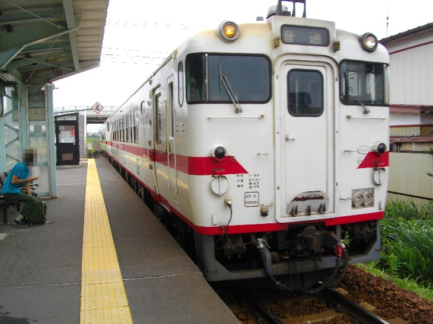
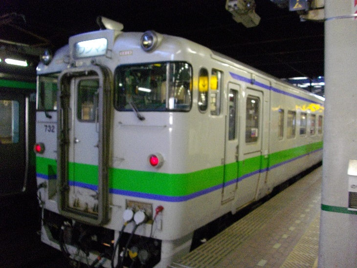
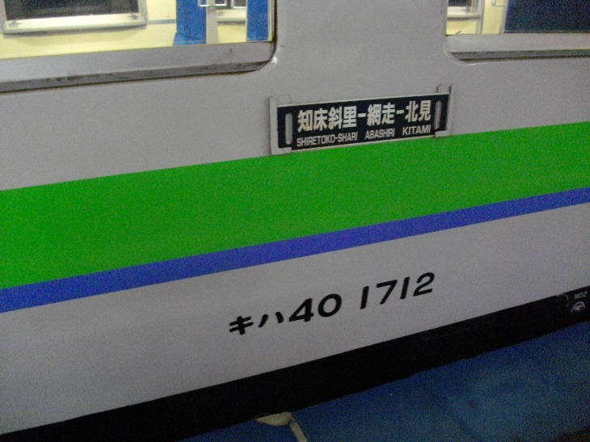
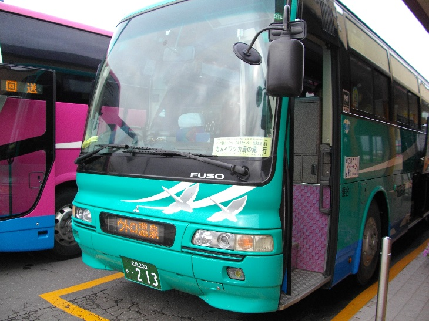

ヒラリラー 2017年道北旅行記
乗車列車リスト
旅行記TOPに戻る
HPに戻る
1日目(8/5)
第1走者 宇都宮線[快速ラビット]宇都宮
- 列車番号：3622E
- 乗車区間：大宮->宇都宮
- 乗車時間：8:27->9:29(1:02)
- 移動距離：79.2 km
- 快適度：★☆☆☆☆
- コメント：混んでいたが、ロングシートだったので辛うじて座れた。
第2走者 宇都宮線[普通]黒磯

- 列車番号：641M
- 乗車区間：宇都宮->黒磯
- 乗車時間：9:32->10:22(0:50)
- 移動距離：53.8 km
- 快適度：☆☆☆☆☆
- コメント：青春18シーズンなのか混雑しており、座れなかった。
第3走者 東北本線[普通]郡山
- 列車番号：2133M
- 乗車区間：黒磯->郡山
- 乗車時間：10:27->11:30(1:03)
- 移動距離：63.4 km
- 快適度：★★★☆☆
- コメント：クロス車、車内は混み合っていたがなんとか座れた。
第4走者 東北本線[普通]福島
- 列車番号：1139M
- 乗車区間：郡山 -> 福島
- 乗車時間：11:40 -> 12:28 (0:48)
- 移動距離：46.1 km
- 快適度：★★★★☆
- コメント：大体の人は会津若松、猪苗代に行くのか郡山から空いた。
第5走者 東北本線[快速シティラビット5号]仙台
- 列車番号：3575M
- 乗車区間：福島 -> 仙台
- 乗車時間：12:40 -> 13:55 (1:15)
- 移動距離：79.0 km
- 快適度：★★★★☆
- コメント：福島で仙台行きに変わったので、乗り換え不要。早いし便利である。
第6走者 東北本線[普通]小牛田
- 列車番号：2549M
- 乗車区間：仙台 -> 小牛田
- 乗車時間：14:35 -> 15:20 (0:45)
- 移動距離：43.2 km
- 快適度：★★☆☆☆
- コメント：ここから701、小牛田って地名っては地元民か鉄オタかきっぱーしか有名じゃ無さそう
第7走者 東北本線[普通]一ノ関
- 列車番号：537M
- 乗車区間：小牛田 -> 一ノ関
- 乗車時間：15:35 -> 16:23 (0:48)
- 移動距離：50.1 km
- 快適度：★★☆☆☆
- コメント：運賃表を表示してるコンピュータが再起動中なのか、青い画面を映していた
第8走者 東北本線[普通]盛岡
- 列車番号：1545M
- 乗車区間：一ノ関 -> 盛岡
- 乗車時間：16:30 -> 18:04 (1:34)
- 移動距離：90.2 km
- 快適度：★★☆☆☆
- コメント：同じ701でも色が渋くなる。中身は同じだけど
第9走者 IGRいわて銀河鉄道線・青い森鉄道線[普通]八戸
- 列車番号：4541M
- 乗車区間：盛岡 -> 八戸
- 乗車時間：18:15 -> 20:05 (1:50)
- 移動距離：107.9 km
- 快適度：★★★☆☆
- コメント：ここからは北東パスの恩恵を受ける区間。セミクロスの座席配置が面白い
第10走者 八戸線[普通]久慈
- 列車番号：457D
- 乗車区間：八戸 -> 長苗代
- 乗車時間：20:26 -> 20:30 (0:04)
- 移動距離：3.4 km
- 快適度：★★★★☆
- コメント：この旅初の気動車、人がほとんど乗ってない夜の普通列車っていいですよね。
2日目(8/6)
第11走者 八戸線[普通]八戸

- 列車番号：430D
- 乗車区間：長苗代 -> 八戸
- 乗車時間：8:44 -> 8:50 (0:06)
- 移動距離：3.4 km
- 快適度：★☆☆☆☆
- コメント：通学客が多くて立ちになってしまった。一駅だから問題なかったけど
第12走者 青い森鉄道線[普通]青森
- 列車番号：569M
- 乗車区間：八戸 -> 青森
- 乗車時間：8:55 -> 10:27 (1:32)
- 移動距離：96.0 km
- 快適度：★★☆☆☆
- コメント：朝方なので混雑しており、ボックスシートも全員埋まってた。
第13走者 奥羽本線[普通]秋田
- 列車番号：652M
- 乗車区間：青森 -> 弘前
- 乗車時間：10:40 -> 11:25 (0:45)
- 移動距離：37.4 km
- 快適度：★★☆☆☆
- コメント：特に言うこともない普通の701系
この間に弘南バス：土手町循環100円バスに乗って弘前駅<->弘前市役所を往復
第14走者 奥羽本線[普通]青森
- 列車番号：661M
- 乗車区間：弘前 -> 青森
- 乗車時間：15:31 -> 16:21 (0:50)
- 移動距離：37.4 km
- 快適度：★★☆☆☆
- コメント：上と同じく
番外 青森観光バス ねぶたん号
- バス番号：不明
- 乗車区間：青森駅前 -> 津軽海峡フェリーターミナル
- 乗車時間：17:50 -> 18:05 (0:15)
- 移動距離：不明
- 快適度：★★☆☆☆
- コメント：コミュニティバスのような外見と車内、というかそのまんまか
番外 津軽海峡フェリー[ブルードルフィン]函館

- 番号：22
- 乗車区間：青森 -> 函館
- 乗車時間：19:10 -> 22:50 (3:40)
- 移動距離：113.0 km
- 快適度：★★★★★
- コメント：所要時間4時間の割には自販機コーナーやシャワーが完備されており、スタンダードでも十分快適に過ごすことが出来た。
3日目(8/7)
番外 北都交通[高速はこだて号]札幌

- バス番号：不明
- 乗車区間：函館 -> 札幌
- 乗車時間：23:25 -> 5:35 (6:10)
- 移動距離：310.4 km（概算）
- 快適度：★★★★☆
- コメント：夜行は嬉しい3列シート、高速に乗るとすぐに消灯なのでスマホをポチポチいじることは出来ない。ひたすら寝るのみ
第15走者 函館本線[普通]旭川

- 列車番号：923D
- 乗車区間：札幌 -> 旭川
- 乗車時間：6:00 -> 8:54 (2:54)
- 移動距離：136.8 km
- 快適度：★★★☆☆
- コメント：電化区間を走る謎の気動車、出発時は通学客で賑わうが札幌近郊を出るとガラガラに
第16走者 宗谷本線[快速なよろ1号]名寄

- 列車番号：3321D
- 乗車区間：旭川 -> 名寄
- 乗車時間：11:29 -> 12:52 (1:23)
- 移動距離：76.2 km
- 快適度：★★★★☆
- コメント：名前付き快速の割に、きたみの影に隠れてちょっと影が薄い。
第17走者 宗谷本線[普通]稚内

- 列車番号：4327D / 4331D
- 乗車区間：名寄 -> 稚内
- 乗車時間：14:52 -> 19:49 (4:57)
- 移動距離：183.2 km
- 快適度：★★★★★
- コメント：日本最北端に向かう列車。音威子府でのドカ停や天塩川沿いの絶景を昼間の内に走り、乗っていて飽きない列車である。
4日目(8/8)
番外 宗谷バス 天北宗谷岬線 音威子府
- バス番号：5
- 乗車区間：稚内 -> 宗谷岬
- 乗車時間：10:22 -> 11:12 (0:50)
- 移動距離：30.9 km
- 快適度：★★☆☆☆
- コメント：なんと音威子府まで行く長距離便の割に、普通の路線バスを使用している。天北線の代替路線みたいですね。
番外 宗谷バス 天北宗谷岬線 稚内
- バス番号：5
- 乗車区間：宗谷岬 -> 稚内
- 乗車時間：11:56 -> 12:50 (0:54)
- 移動距離：30.9 km
- 快適度：★★☆☆☆
- コメント：宗谷岬から稚内までは片道1250円、結構高いんですよね。
番外 宗谷バス 緑町線(1) / 富士見線 市内巡回
- バス番号：不明
- 乗車区間：稚内 -> ノシャップ
- 乗車時間：12:59 -> 13:10 (0:11)
- 移動距離：4.7 km
- 快適度：★★★☆☆
- コメント：宗谷岬の路線と同じ車体を使用、こっちの方は結構空いている。
番外 宗谷バス 緑町線(1) / 富士見線 市内巡回
- バス番号：不明
- 乗車区間：ノシャップ -> 稚内温泉前
- 乗車時間：14:18 -> 14:25 (0:07)
- 移動距離：3.4 km
- 快適度：★★★☆☆
- コメント：運賃はノシャップ～稚内温泉より、稚内～ノシャップの方が高い。距離はこっちのほうが短いのにね
番外 宗谷バス 緑町線(1) / 富士見線 市内巡回
- バス番号：不明
- 乗車区間：稚内温泉前 -> 稚内
- 乗車時間：17:27 -> 17:44 (0:17)
- 移動距離：8.1 km
- 快適度：★★★☆☆
- コメント：温泉から戻る道中に車窓に広がる、大量の倒壊した小屋は何なんだろうか・・・？
第18走者 宗谷本線[普通]名寄
- 列車番号：4330D / 4334D
- 乗車区間：稚内 -> 名寄
- 乗車時間：18:04 -> 21:49 (3:45)
- 移動距離：183.2 km
- 快適度：★★★★☆
- コメント：帰りの便は夜間帯を走るので沿線は楽しめない。外は原生林なので灯りもなく、ぼーっとするしかない
第19走者 宗谷本線[普通]旭川
- 列車番号：334D
- 乗車区間：名寄 -> 旭川
- 乗車時間：22:05 -> 23:39 (1:34)
- 移動距離：76.2 km
- 快適度：★★★★☆
- コメント：何故か3両編成だった。もちろんガラガラ
5日目(8/9)
番外 旭川電気軌道 42系統[急行]旭山動物園

- 系統：42番
- 乗車区間：旭川 -> 旭山動物園
- 乗車時間：9:25 -> 10:00 (0:35)
- 移動距離：11.1 km
- 快適度：★★☆☆☆
- コメント：直行便の朝の便だけあって車内は混み合っていた。辛うじて座れたけど
番外 旭川電気軌道 41系統 旭川
- 系統：41番
- 乗車区間：旭山動物園 -> 旭川
- 乗車時間：13:30 -> 14:14 (0:44)
- 移動距離：11.1 km
- 快適度：★★★☆☆
- コメント：帰りの便はやや空いていた。旭山動物園って結構離れた所にあるんだな…と実感できる。
第20走者 石北本線[特別快速きたみ]北見

- 列車番号：3583D
- 乗車区間：旭川 -> 北見
- 乗車時間：15:37 -> 18:58 (3:21)
- 移動距離：184.7 km
- 快適度：★★★★☆
- コメント：いよいよ石北本線の上川白滝超え、北見からの旭川は一度乗ったことあるけど逆方向は初乗車。二両なせいか思っていたよりは混んでいなかった。
第21走者 石北本線/釧網本線[普通]知床斜里

- 列車番号：4671D
- 乗車区間：北見 -> 桂台
- 乗車時間：19:04 -> 20:32 (1:28)
- 移動距離：54.4 km
- 快適度：★★★☆☆
- コメント：網走を飛び越えて知床斜里まで行っちゃうのがすごいよね。
6日目(8/10)
第22走者 釧網本線[普通]釧路
- 列車番号：4725D
- 乗車区間：桂台 -> 知床斜里
- 乗車時間：6:44 -> 7:22 (0:38)
- 移動距離：35.9 km
- 快適度：★★★☆☆
- コメント：朝早かったので起きるのが辛かった。釧網本線は景色が綺麗
番外 知床バス 知床線/知床シャトルバス カムイワッカ湯の滝

- 番号：3
- 乗車区間：斜里バスターミナル -> カムイワッカ湯の滝
- 乗車時間：8:10 -> 10:03 (1:53)
- 移動距離：61.4 km(概算)
- 快適度：★★★★☆
- コメント：路線バスと思いきや、高速タイプのバス。席は自由席だけど。眠いので車中寝てしまった。
番外 知床バス 知床シャトルバス 知床自然センター
- 番号：6
- 乗車区間：カムイワッカ湯の滝 -> 知床五湖
- 乗車時間：11:13 -> 11:40 (0:27)
- 移動距離：11.3 km(概算)
- 快適度：★★★☆☆
- コメント：知床自然センターの当たりからこの時期は通行止めなので、20分間隔でシャトルバスが出ている。
番外 知床バス 知床シャトルバス 知床自然センター
- 番号：14
- 乗車区間：知床五湖 -> 知床自然センター
- 乗車時間：14:20 -> 14:33 (0:13)
- 移動距離：8.8 km(概算)
- 快適度：★★★☆☆
- コメント：シャトルバスと言ってもハイデッカー車である。多分日本一豪華なシャトルバス
番外 知床バス 知床シャトルバス ウトロ温泉バスターミナル
- 番号：17
- 乗車区間：知床自然センター -> ウトロ温泉バスターミナル
- 乗車時間：15:33 -> 15:40 (0:07)
- 移動距離：5.2 km(概算)
- 快適度：★★★☆☆
- コメント：知床バスのきっぷは、ウトロ温泉～カムイワッカ湯の滝まではなんと途中下車が可能である。便利ですよね。
番外 知床バス 知床線 斜里バスターミナル
- 番号：不明
- 乗車区間：ウトロ温泉バスターミナル -> 斜里バスターミナル
- 乗車時間：17:00 -> 17:50 (0:50)
- 移動距離：37.4 km
- 快適度：★★★★☆
- コメント：20分間隔で運転しているカムイワッカ湯の滝～知床自然センターと違い、ウトロから斜里までは1日5本しか運行してない。乗り過ごしてもエアポートライナーという救済便を使えば網走まで直行できるが、やや高くなる。
第23走者 釧網本線[普通]網走
- 列車番号：4732D
- 乗車区間：知床斜里 -> 網走
- 乗車時間：18:55 -> 19:45 (0:50)
- 移動距離：35.9 km
- 快適度：★★★☆☆
- コメント：そろそろキハ54にも飽きてきたが、思えばこれがラストキハ54だった。
7日目(8/11)
番外 網走バス 市内観光施設めぐり
- 番号：1
- 乗車区間：網走バスターミナル -> 博物館網走監獄
- 乗車時間：8:50 -> 9:01 (0:11)
- 移動距離：4.6 km
- 快適度：
- コメント：
番外 網走バス 市内観光施設めぐり
- 番号：2
- 乗車区間：博物館網走監獄 -> 網走駅
- 乗車時間：11:21 -> 11:30 (0:09)
- 移動距離：3.5 km
- 快適度：
- コメント：
第24走者 石北本線[普通]遠軽
- 列車番号：4660D
- 乗車区間：網走 -> 遠軽
- 乗車時間：11:58 -> 15:06 (3:08)
- 移動距離：113.2 km
- 快適度：
- コメント：
第25走者 石北本線[普通]旭川
- 列車番号：4620D
- 乗車区間：遠軽 -> 旭川
- 乗車時間：16:35 -> 20:04 (3:29)
- 移動距離：124.5 km
- 快適度：
- コメント：
第26走者 函館本線[普通]岩見沢
- 列車番号：2342M
- 乗車区間：旭川 -> 岩見沢
- 乗車時間：20:52 -> 22:18 (1:26)
- 移動距離：96.2 km
- 快適度：
- コメント：
第27走者 函館本線[普通]手稲
- 列車番号：276M
- 乗車区間：岩見沢 -> 白石
- 乗車時間：22:34 -> 23:09 (0:35)
- 移動距離：34.8 km
- 快適度：
- コメント：
第28走者 千歳線[普通]苫小牧
- 列車番号：2850M
- 乗車区間：白石 -> 千歳
- 乗車時間：23:17 -> 23:50 (0:33)
- 移動距離：35.2 km
- 快適度：
- コメント：
8日目(8/12)
第29走者 千歳線[快速エアポート]新千歳空港
- 列車番号：3850M
- 乗車区間：千歳 -> 新千歳空港
- 乗車時間：6:47 -> 6:55 (0:08)
- 移動距離：5.6 km
- 快適度：
- コメント：
番外 バニラエアー 成田空港
- 番号：JW 900
- 乗車区間：新千歳空港 -> 成田空港
- 乗車時間：8:00 -> 9:30 (1:30)
- 移動距離：820.0 km
- 快適度：
- コメント：
メニューへ